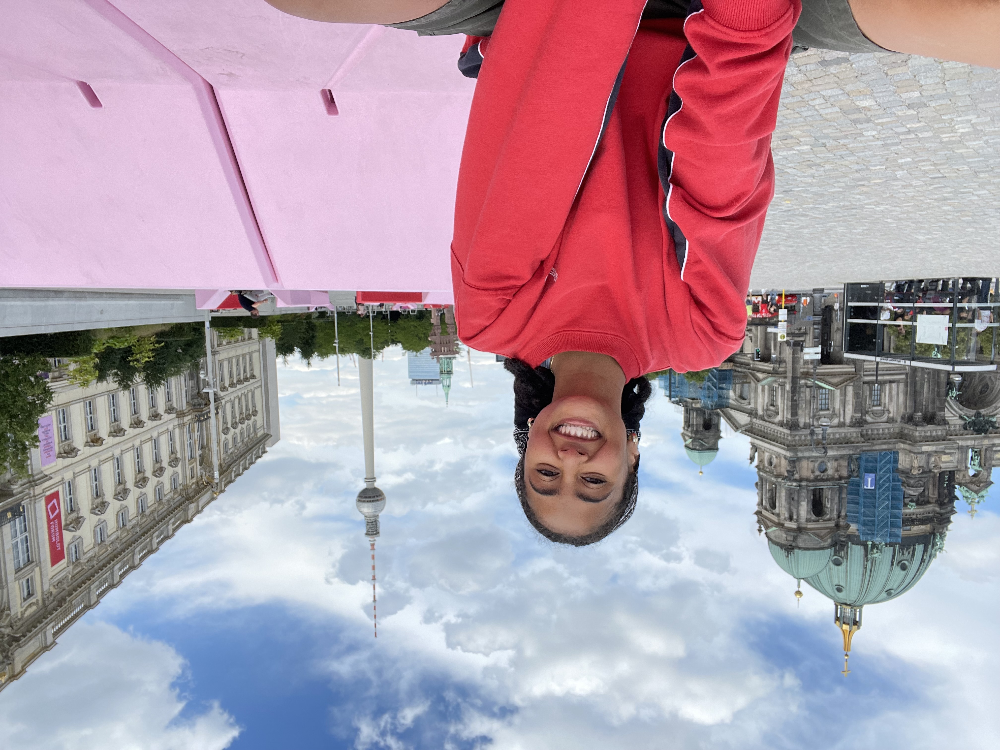

Janelle Whiteside
Computer Engineer building a career in embedded aerospace systems shaped by an art minor, campus leadership, and six weeks studying engineering and sustainability abroad in Germany.
A Few Pictures
About Me

Hi! My name is Janelle Whiteside, and I'm currently a 5th-year at the University of Florida. I will be graduating this Fall with a Bachelor's in Computer Engineering and an Art minor. The following Spring, I will be starting as a Software Engineer at Honeywell Aerospace in Clearwater, FL, working with embedded GPS/INS systems in aircrafts. Working with embedded systems is the ideal combination for me as a computer engineer, since I'm interested in both the software and hardware sides of a system not just how code runs, but how it behaves inside the physical world it's built into.
At my core, I believe the best engineering happens at intersections between disciplines, between people, and between cultures. That philosophy has shaped almost everything I've chosen to do in college: pairing a technical degree with an art minor, taking on leadership roles that put me in front of people instead of just a screen, and spending six weeks studying engineering and culture abroad in Germany. I don't think of my interests as separate boxes to check off. The same curiosity that pulls me toward a hard circuits problem is the one that pulls me toward a pottery wheel or an unfamiliar city I've never had to navigate before.
My academic and career goals center on becoming an engineer who can move between software and hardware, and eventually between technical and leadership work. Interning at Honeywell Aerospace confirmed that I want to build a career in embedded systems for aviation, work where a single line of code has to perform reliably inside a physical, safety-critical environment. Longer term, I'm drawn to the sustainability side of engineering, something my coursework in Germany sharpened, I want to work on systems, aerospace or otherwise, that are designed with their full lifecycle in mind rather than just their immediate function.
Outside of coursework, I'm a maker. Wood and clay are my favorite mediums, and I'm currently finishing a senior art project built around a decorative coffee table carved with the Gye Nyame symbol, alongside a thrown vase, cups, and plates a body of work about carrying heritage into everyday, lived-in spaces rather than treating it as something to display and never touched. I also enjoy mentoring, which has shown up throughout my time in college: as a Resident Assistant and STEP UP mentor for first-year engineers, and as a teaching assistant for Engineering Design & Society, where I manage a fleet of 3D printers and help students bring their CAD designs into the physical world.
Teamwork, technology, global engagement, and continuous self-development are the threads that tie all of this together, and they're the lens I try to bring to every project I take on, whether it's technical, creative, or something in between.
Skills
Proficient
Intermediate
Resume
Employer-Valued Competencies
Four competencies the National Association of Colleges and Employers (NACE) identifies as key to career readiness.
Teamwork
As Vice President of Social Affairs for Phi Sigma Rho, the sorority for women in engineering, I was responsible for the chapter's entire social calendar over one semester including sisterhood events, cross-organization mixers, and major chapter-wide gatherings. I needed to plan and run more than 50 events per semester, manage a committee of four appointed officers, and keep every event compliant with university, Greek, and national Risk Management policies. I built a shared event calendar and budget-tracking system with the VP of Finance, delegated ownership of recurring event types to specific officers, and ran regular check-ins to catch logistical problems before event day. I also handled the paperwork and attendance that kept every event within risk-management guidelines.
Technology
During my summer at Honeywell Aerospace, I joined a team supporting a legacy avionics flight systems program that depended on a decades-old engine documentation workflow built in Fortran. I was asked to modernize that documentation tool and, separately, to help update embedded Ada code in a safety-critical system by removing obsolete legacy components. I redesigned the documentation tool as a modular Python system, worked through the embedded codebase closely enough to make targeted Ada modifications, and created and executed a formal test plan to confirm the embedded changes preserved functional correctness. I tracked all of it through Jira and Bitbucket alongside the rest of my team. The new Python tool significantly improved processing speed, maintainability, and usability for the engineers using it after me, and the embedded baseline I helped establish passed verification cleanly real experience working inside the rigorous, safety-critical process that embedded aerospace software demands.
Global & Cultural Engagement
With an art minor alongside my engineering degree, and fresh off six weeks on an engineering-and-culture study abroad program in Germany, I wanted my senior capstone to bring those two sides of my education together instead of keeping them separate. My task was to design a senior ceramics and woodworking project, plus a related trompe l'oeil ceramic sculpture assignment, that said something real about identity rather than just demonstrating technical skill. I'm building a decorative coffee table with the Gye Nyame Akan symbol carved into the top, using two tones to separate the symbol from the negative space and a base made of two intertwined spiral legs, alongside a thrown vase, cups, and plates. The concept is about carrying heritage into everyday spaces without it feeling like a souvenir something that could sit on anyone's coffee table and actually get used. In parallel, I'm working on a trompe l'oeil sculpture that fuses two everyday, nature-based objects into one functional, impossible hybrid. The project has pushed me to treat cultural material with the same precision I'd bring to an engineering design, and it's become the piece of my portfolio I'm proudest to explain to people who assume "computer engineer" and "artist" don't belong in the same sentence.
Career & Self-Development
During my study abroad program in Germany, one full coursework unit was dedicated to the environmental side of engineering plastic recycling systems, renewable energy, and sustainable materials, paired with site visits like a steel mill and the Energy Parc Saerbeck. I set out to actually understand, rather than just acknowledge, where current engineering practice falls short environmentally, and to think about where I personally wanted to stand on that going forward. I worked through questions comparing mechanical versus chemical plastic recycling, the real-world practicality of biopolymers like PLA and PHA, recycling-optimized product design, and the economic barriers to non-fossil aircraft propulsion and renewable car fuels directly relevant given where my career is headed. I also compared U.S. and European approaches to waste separation, which surfaced infrastructure gaps in American systems I'd never thought to question before. That coursework reshaped how I think about my own career goals. I now actively look for the sustainability angle in engineering problems I'm handed, including in aerospace, and I plan to keep seeking out projects and continued learning that push the environmental side of engineering rather than treat it as someone else's job.
Global Experiences
A record of the ways I've engaged with the world on campus, in language, in coursework and what it's added up to.
Global Campus Activities
My clearest global engagement on campus came through modeling rather than coursework. I participated in the African Student Union's annual showcase, walking as a model in African fashion show, an event built around celebrating the continent's design traditions in front of the whole campus community rather than just discussing them in a classroom. Being on that stage, wearing pieces rooted in traditions I'd otherwise only studied from a distance, connected directly to the same interest in heritage that shows up in my senior art project, where I'm carving the Gye Nyame symbol into a coffee table to bring Akan heritage into an everyday space.
I also took part in Afrofuturism Week, walking in its fashion show as part of the Regal and Royal section, a segment built around styling that reimagines African royalty through a futuristic lens, blending historical reference with forward-looking design. Where the ASU showcase celebrated existing African fashion traditions, Afrofuturism Week pushed further into imagination: asking what African identity and aesthetics look like reinterpreted for an imagined future rather than only preserved from the past. Walking in a segment built specifically around regality gave me a different kind of presence to carry than everyday modeling, it asked me to hold myself like the royalty the designs were referencing, which was its own small lesson in confidence and performance. Both experiences put me in direct, physical conversation with a part of global and diasporic culture that I don't get to engage with through engineering coursework at all. They've also fed back into my art practice: thinking about how clothing and craft carry heritage forward is close to the same question I'm asking with ceramics and wood, just worked out on a runway instead of a pottery wheel.
Study Abroad & International Experience
For six weeks, I took part in an engineering-and-culture study abroad program in Germany that paired unit-based technical coursework, plastic recycling and biopolymers, renewable energy, materials science, e-mobility, and agricultural technology with a "Living Society Module" of cultural study trips to Berlin, the Rhein/Ruhr industrial region, and the North Sea coast.
Germany surprised me in small, specific ways almost immediately. The public transit system was more reliable than anything I'm used to at home, where buses only run well near campus because the university subsidizes them rather than the city. Groceries, transportation, nearly everything cost noticeably less than in the U.S., and the professors, graduate students, and strangers I met were far friendlier and more talkative than the stereotypes I'd absorbed beforehand.
What I enjoyed most was Landscape Park Duisburg Nord, a former industrial site in the Ruhr area turned into an open public park. Climbing the old industrial monuments with no restricted areas or supervision felt like one enormous open-air playground. We signed our names in marker next to the graffiti already covering the structures, watched the sunset turn the skyline gold from the top of a former blast furnace, and came back again after dark to see the whole park lit up differently. I'd go back just to see if our names are still there.
The trip also pushed me somewhere heavier. At the "Palace of Tears" in Berlin, I learned about a seventeen-year-old shot trying to cross from East to West close enough that American soldiers could see him bleeding out but too far to intervene without starting an international incident, so both sides just watched. Sitting with a story like that, so far outside anything in my own life, was its own kind of discomfort, and it changed how I approached the rest of the trip's heavier historical sites, including the Berlin Wall itself: standing there, I mostly felt how much the wounds of that history have healed, even while the history stays impossible to forget.
More than anything, the trip taught me that I can drop into an unfamiliar country, an unfamiliar technical curriculum, and an unfamiliar culture all at once and still find my footing quickly and that sitting with something uncomfortable, like the stories at the Palace of Tears, is its own kind of growth, not just the fun parts like climbing an old blast furnace at sunset.
Language Learning
My language experience with German started small and stayed small. I worked through a bit of German on Duolingo before the trip, nowhere near conversational, just enough to recognize basic words and phrases and not walk in completely blind. Once we arrived, the program offered beginner German classes alongside the technical coursework, which I took, so my actual learning happened less from self-study and more from that structured beginner track combined with just being surrounded by the language day to day.
More than once, I found I could actually communicate with the little German I had ordering food, following basic directions, picking up enough from a conversation to follow along, which surprised me more than almost anything else on the trip. I hadn't expected a Duolingo streak and one beginner class to carry me that far.
The biggest challenge was that I'd expected to need German far more than I did. Between the beginner classes and the fact that plenty of people spoke English almost everywhere we went, I never got pushed into the kind of high-stakes, sink-or-swim German conversations I'd half-prepared myself for. That was its own lesson. My actual challenge wasn't surviving in German, it was staying motivated to practice a language I technically didn't need in the moment, which is a very different skill than pushing through fear of making mistakes. It left me with a clearer sense that if I want real fluency, it has to come from choosing to keep learning past the point of necessity, not from being forced into it by circumstance.
International Coursework
My international coursework centered on five applied units I worked through during my study abroad program in Germany, each built around a real engineering and policy question rather than a textbook chapter. In materials, I explored how to extend the service life of structural metals, through material selection, non-destructive testing like ultrasonic and radiographic inspection, and cathodic protection (sacrificial anode and impressed current) grounded in a visit to a steel mill where I watched chromium alloying and recycled stainless steel in production, and I worked through why hydrogen embrittlement is so hard to study: hydrogen atoms are small and mobile enough to be nearly impossible to track and quantify, and at high temperatures hydrogen can even react with carbides in steel to form methane, weakening it from the inside.
In energy, I compared solar and wind as the renewable sources best positioned for large-scale adoption, calculated my own apartment's yearly electricity consumption (around 15,300 kWh, split across four roommates and dominated almost entirely by an AC unit that barely turns off in Florida), and worked out how much solar panel surface area it would actually take to power my place on renewables alone. In plastics, I compared mechanical and chemical recycling, biopolymers like PLA and PHA, and recycling-optimized design, and compared American and European waste separation systems directly, in Germany, the pfand deposit system means you get money back for returning bottles, which I used firsthand during Maiwoche, and which does double duty as an informal income source for people experiencing homelessness. In e-mobility, I worked through the core technologies autonomous vehicles need to replace human senses and judgment, including the genuinely uncomfortable ethical question of who's responsible when an AI has to make a split-second, no-good-option decision. And in agriculture, I looked at where sensor-based and autonomous field equipment breaks down in real-world conditions, mud, dust, inconsistent lighting, versus in a controlled lab setting.
What drew me to this coursework was the chance to study engineering sustainability somewhere with a genuinely different infrastructure than the U.S. Comparing the two systems pfand versus HOA-dependent recycling pickup, or Germany's reliance on waste-to-energy incineration versus America's landfills, made visible how much of what I'd assumed was a technical limitation back home is actually a policy and infrastructure choice. That's the biggest way the course expanded my worldview: it's harder now for me to treat a system as "just how things are" instead of "a choice someone made that could be made differently."
This connects directly to my degree and career path. I'm starting as a software engineer at Honeywell Aerospace working on embedded GPS/INS systems, and the aircraft propulsion economics I studied in Germany the weight and disposal problems of lithium batteries, the cost and ethics of biofuel production, gave me a far more technical picture of why aviation is one of the hardest sectors to decarbonize, which is exactly the kind of constraint I want to keep in view as I build a career there. The assignment I'm proudest of is still the hydrogen embrittlement question, where I had to reason through a genuinely unsettled research problem using what I'd seen firsthand at the steel mill rather than just citing a textbook explanation.
Final Reflection
Cultural Understanding and World View
Six weeks in Germany gave me a genuinely different knowledge base about another culture not the postcard version, but the working one. I noticed it almost immediately: German public transit was more reliable than anything I'm used to at home, where buses only run well near campus because the university subsidizes them rather than the city. Groceries and everyday costs were noticeably lower, and the professors, graduate students, and strangers I met were far friendlier and more talkative than the stereotypes I'd absorbed beforehand. Small systems like the pfand bottle deposit getting a euro back for returning a glass during Maiwoche, a system that also lets people experiencing homelessness earn money by collecting bottles showed me how a policy choice can quietly double as a social safety net. That shift in knowledge turned into a real shift in interest: I came home paying closer attention to the political and economic decisions behind systems I'd always taken for granted, from how Germany treats recycling as infrastructure rather than individual willpower to why a site like Energy Parc Saerbeck gets government investment at all. Transnational issues like plastic recycling, renewable energy adoption, and aviation decarbonization stopped being abstract case studies and became things I can talk about with real technical grounding. I won't claim this trip handed me fluent German or a fully formed political identity if anything, I learned how much I'd assumed about both going in but it gave me a sharper, less American-centric lens for looking at engineering and policy together.
Personal Growth and Values
The personal growth from this trip showed up in both the light moments and the heavy ones. Climbing through Landscape Park Duisburg Nord with no restricted areas or supervision signing my name in marker next to decades of other visitors' graffiti, going back after dark to see the whole park lit up differently, gave me a kind of independence and initiative I don't get much practice with in a structured academic schedule. Learning, at the Palace of Tears, about a seventeen-year-old shot trying to cross from East to West Berlin, close enough that American soldiers watched him bleed out without being able to help, pushed me somewhere much less comfortable, and sitting with a story like that, so far outside anything in my own life, stretched my capacity for empathy in a way the lighter parts of the trip didn't. Standing at the Berlin Wall itself afterward, I felt how much the wounds of that history have healed even as the history stays impossible to forget, which gave me a clearer sense of my own values around memory and repair. I came back more confident navigating new situations, more comfortable accepting that a culture won't behave the way I imagined, and with a better understanding of my own strengths: I adapt fast, I ask good technical questions, and I'd rather sit with something uncomfortable and learn from it than stay comfortable and miss it.
Professional & Career Development
Professionally, this experience did real work in clarifying rather than just broadening my goals. Before the trip, I knew I wanted to work in embedded systems; after working through the e-mobility, materials, and energy units, calculating my own apartment's electricity use, reasoning through hydrogen embrittlement in steel, watching a steel mill actually alloy and shape recycled stainless steel I have a far more specific sense of what I want that career to look like. Starting at Honeywell Aerospace on embedded GPS/INS systems feels less like a job I landed and more like a direction I chose with better information, including a real appreciation for why sustainable engineering in aviation is such a hard, interesting problem: the battery weight and lithium disposal issues, the cost and ethics of biofuel production, the sheer difficulty of decarbonizing something that has to fly. The trip also sharpened how I think about organizational and national culture: watching German engineers and technicians move through a steel mill, and comparing how differently the U.S. and Europe structure something as basic as waste infrastructure or energy policy, made me more attentive to the fact that "how things are done" varies by organization and by country, not just by technical constraint. That awareness, paired with six weeks of adapting to unfamiliar routines, an unfamiliar language, and unfamiliar coursework on short notice, has left me more willing to take on roles and tasks I'm not already comfortable with which is exactly the posture I want to carry into a first job where I'll be learning a new system, a new team, and a new set of constraints all at once.
Taken together, these six weeks didn't just add a line to my resume they gave me a clearer notion of what I want to do with my life and the kind of engineer I want to become: someone who treats sustainability, culture, and technical skill as connected rather than competing priorities, and who's willing to stay uncomfortable long enough to actually learn something.